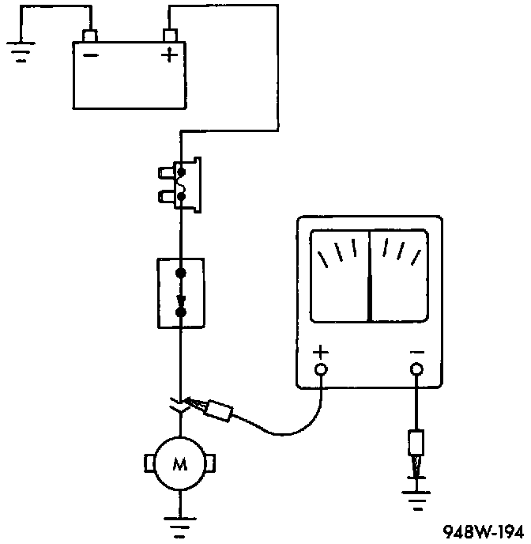
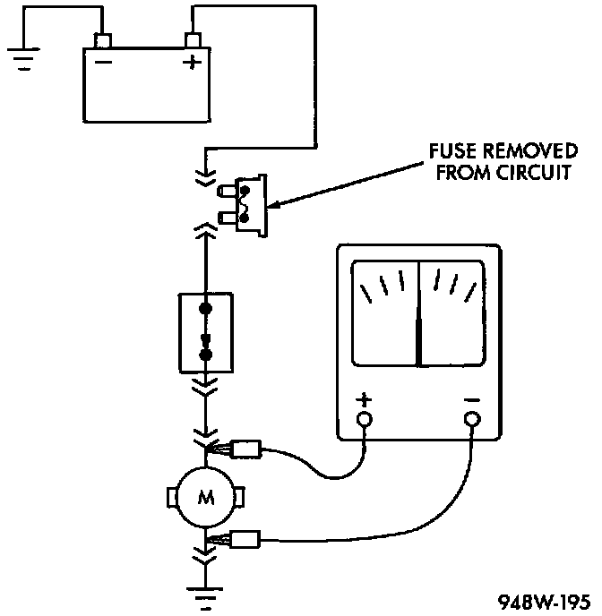
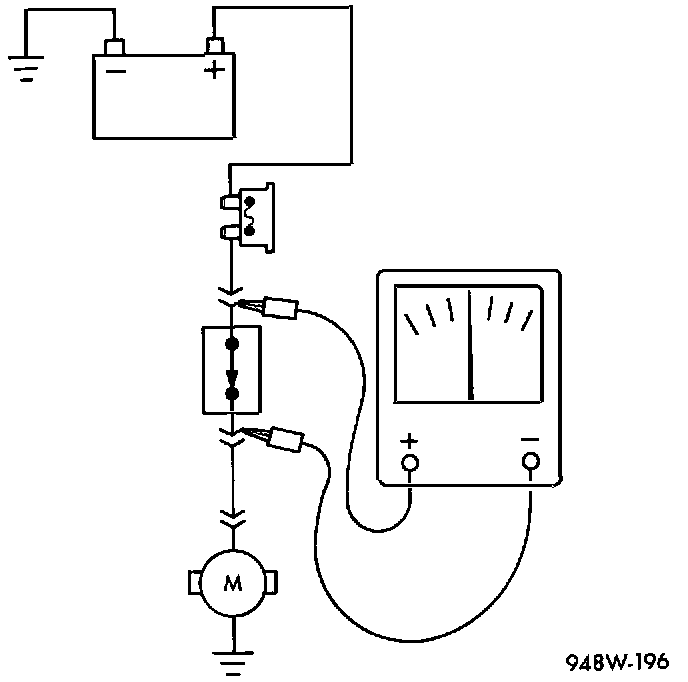

Troubleshooting Tests
Before beginning any tests on a vehicle's electrical system, use the wiring diagrams to study the circuit. Also refer to Troubleshooting Wiring Problems section.Testing For Voltage:

Testing For Voltage
1. Connect the ground lead of a voltmeter to a known good ground.
2. Connect the other lead of the voltmeter to the selected test point. The vehicle ignition may need to be turned ON to check voltage. Refer to the appropriate test procedure.
Testing For Continuity:

Testing For Continuity
1. Remove the fuse for the circuit being checked or disconnect the battery.
2. Connect one lead of the ohmmeter to one side of the circuit being tested.
3. Connect the other lead to the other end of the circuit being tested. Low or no resistance means good continuity.
Testing For A Short To Ground
1. Remove the fuse and disconnect all items involved with the fuse.
2. Connect a test light or a voltmeter across the terminals of the fuse.
3. Starting at the fuse block, wiggle the wiring harness every 6 to 8 Inches and watch the voltmeter/test light.
4. If the voltmeter registers voltage or the test light glows, there is a short-to-ground in that general area of the wiring harness.
Testing For A Short-to-ground On Fuses Powering Several Loads
1. Refer to the wiring diagrams and disconnect or isolate all items on the fuse circuit.
2. Replace the blown fuse.
3. Supply power to the fuse by turning ON the ignition switch or re-connecting the battery.
4. Start connecting the items in the fuse circuit, one at a time. When the fuse blows, the circuit with the short-to-ground has been isolated.
Testing For Voltage Drop:

Testing For Voltage Drop
1. Connect the positive lead of the voltmeter to the side of the circuit closest to the battery.
2. Connect the other lead of the voltmeter to the other side of the switch or component.
3. Operate the item.
4. The voltmeter will show the difference in voltage between the two points.